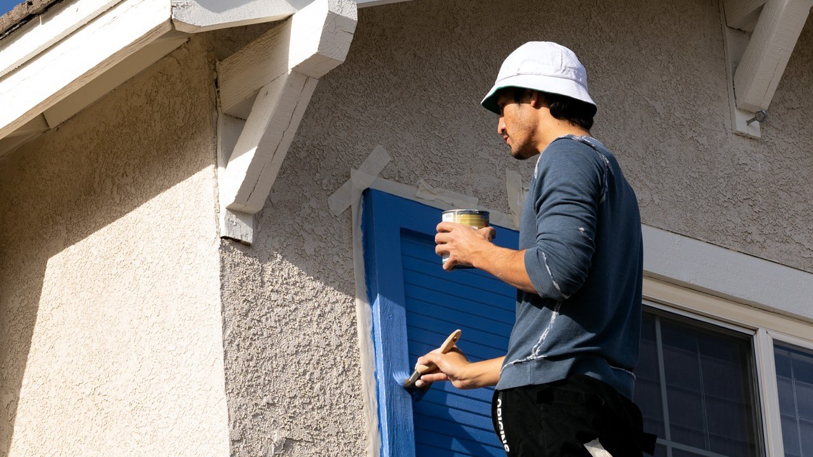
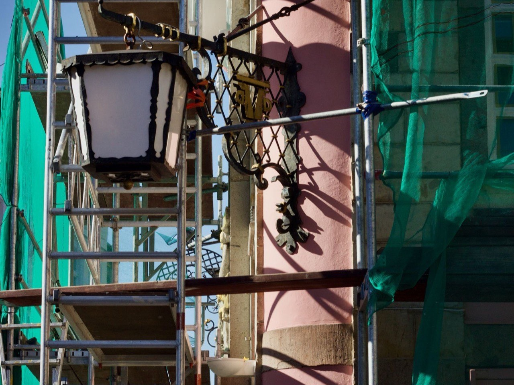
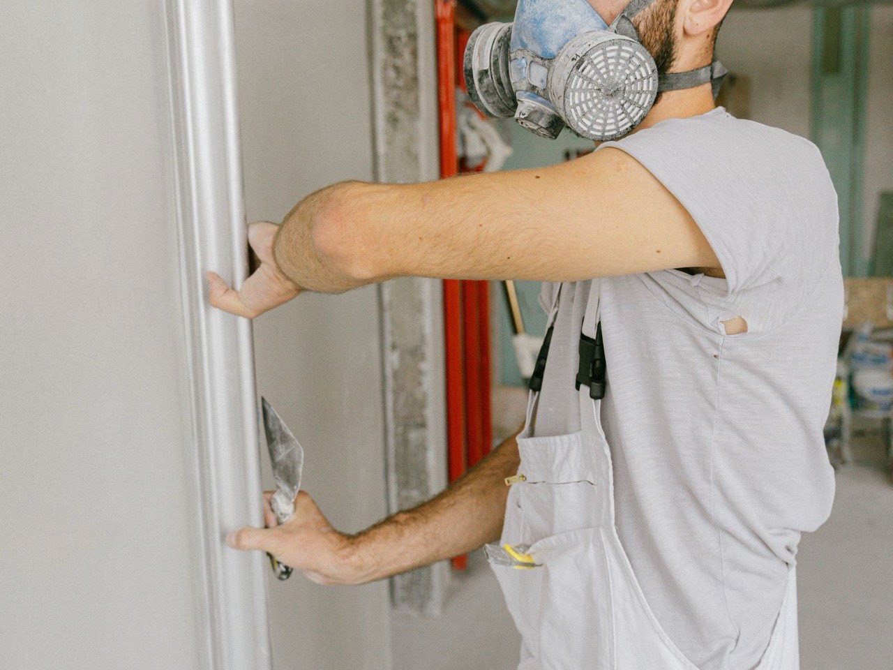
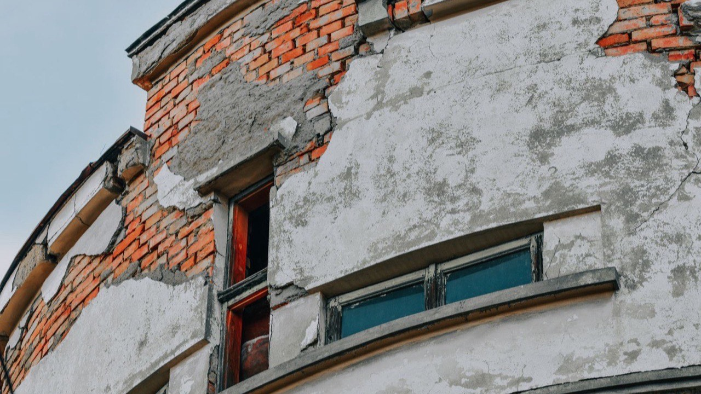

Votre façade ravivée, votre maison transformée.
Ravalement, peinture de façade, boiseries, murettes, colombages : on prépare le support dans les règles, puis on met en couleur. Le résultat tient des années, pas deux étés.
- Devis gratuit et chiffré sous 24 h, sans engagement
- Artisan local, assuré et travail garanti
- Préparation complète : fissures et enduits repris avant peinture
- Façade, boiseries et murettes : un seul interlocuteur
Réponse le jour même du lundi au samedi, 8 h à 19 h.

La peinture ne fait pas que décorer.
Pierre blonde, enduits à la chaux, colombages du Bergeracois, volets et boiseries : en Dordogne, la façade fait le charme de la maison. Mais l'humidité, le gel et le soleil d'été attaquent peintures et enduits année après année.
La façade est un bouclier
Peinture et enduit protègent le mur de la pluie. Écaillés ou fissurés, ils laissent l'eau entrer dans la maçonnerie.
Le bois à nu ne pardonne pas
Colombages, avant-toits, volets : une boiserie dont la peinture s'écaille grise en un an et pourrit en quelques années.
Les fissures s'agrandissent
Une microfissure laisse passer l'eau ; le gel et les saisons font le reste. Reprise tôt, c'est un enduit. Tard, c'est une reprise de maçonnerie.
La façade, c'est la première impression
Une maison à la façade fatiguée perd de sa valeur et se vend moins bien. Un ravalement bien fait la transforme littéralement.

Quatre étapes, un seul artisan.
La différence entre une peinture qui tient quinze ans et une qui cloque en deux étés, c'est la préparation. On ne la saute jamais.
Diagnostic de façade
État de l'enduit, fissures, humidité, boiseries. Vous recevez un devis détaillé et, si besoin, un accompagnement pour la déclaration en mairie.
Préparation des supports
Nettoyage, décapage des parties écaillées, reprises de fissures et d'enduit, ponçage et traitement des boiseries.
Sous-couche et traitement
Fixateur ou sous-couche adaptés au support, traitement anti-mousse si la façade verdit. C'est ce qui fait accrocher la finition.
Mise en couleur
Peinture de façade, lasure ou peinture des boiseries, murettes et colombages. Deux couches, finitions nettes, chantier laissé propre.
Compris dans chaque chantier
- Protection des menuiseries, sols et plantations
- Reprises de fissures et d'enduit avant peinture
- Sous-couche adaptée à chaque support
- Boiseries poncées et traitées avant finition
- Nettoyage complet en fin de chantier
- Facture détaillée, garantie sur les travaux
Un support préparé, une finition qui dure.
Le secret d'un ravalement réussi ne se voit plus une fois terminé : c'est tout le travail de préparation sous la couche de finition.

Photos d'illustration du métier, pas de chantiers de l'entreprise. Vos propres photos avant / après vous sont remises en fin d'intervention.
Combien coûte un ravalement en Dordogne ?
Impossible d'annoncer un prix juste sans avoir vu la façade : l'état du support fait presque tout le budget. Deux maisons identiques peuvent aller du simple au double selon les reprises à prévoir.
Nettoyage, petites reprises, sous-couche et deux couches de finition sur un support sain.
Préparation complète, reprises d'enduit et de fissures, traitement, finition façade et boiseries.
Le chiffrage est gratuit et remis après visite. Il est détaillé poste par poste, valable un mois, et vous n'avancez rien pour l'obtenir.
Ce qui fait varier le prix
- La surface et la hauteur de la façade
- L'état du support et les reprises à prévoir
- La nature du mur : enduit, pierre, bois, colombages
- L'accès : échafaudage ou nacelle nécessaires
- Les boiseries et murettes à traiter en plus
- Le type de finition choisi
Visite et devis gratuits, aucun acompte demandé.

Une fissure aujourd'hui, une infiltration demain.
Reprise à temps, une fissure se règle avec un enduit. Faites vérifier votre façade tant que ce n'est que de la peinture.
Ce que disent nos clients.
Intervention de très bonne qualité : réfection complète d'une toiture. Travail fini et soigné. Le nettoyage des abords a été parfaitement réalisé.
Entreprise professionnelle très sérieuse, de qualité, que je recommande.
Professionnel, travail très soigné.
Ce qui se passe après votre demande.
Vous laissez un numéro, pas votre après-midi. Voici le déroulé exact, et ce qu'il ne comprend pas.
On vous rappelle
Le jour même en général, sous 24 h ouvrées au plus tard. Un seul appel : si vous ne répondez pas, on laisse un message et on attend votre retour.
On convient d'un passage
À l'heure qui vous arrange. L'artisan regarde le support, les fissures et les boiseries, et vous n'avez pas besoin d'être là si l'accès est possible.
Vous recevez le devis
Détaillé poste par poste, avec les photos de ce qui a été vu. Valable un mois, sans engagement, et vous n'avancez rien.
Vous décidez
Si vous dites non, l'histoire s'arrête là : pas de relance insistante, pas de numéro revendu. Si vous dites oui, on cale une date ensemble.
Ce que la demande n'engage pas
- Aucun paiement, aucun acompte
- Aucune donnée revendue ni partagée
- Aucune relance après un refus
Bergerac, le Bergeracois et toute la Dordogne.
Nous intervenons dans toute la Dordogne, du Périgord blanc au Périgord noir, de Périgueux à Sarlat et de Bergerac à Brantôme.
Votre commune n'est pas dans la liste ? Appelez-nous, on vous dit tout de suite si on se déplace.
Vous vous demandez…
Une question qui n'est pas là ? Un appel suffit, on répond sans jargon et sans forcer la vente.
06 98 29 79 95Combien coûte un ravalement de façade ?
À quelle fréquence faut-il refaire une façade ?
Faut-il une autorisation de la mairie ?
Peignez-vous les colombages et les boiseries ?
Que faites-vous des fissures ?
Combien de temps dure le chantier ?
Y a-t-il une aide ou un crédit d'impôt ?
Intervenez-vous sur les copropriétés et les commerces ?
Faites vérifier votre façade, c'est gratuit.
Un artisan passe, regarde le support, les fissures, les boiseries, et vous dit ce qu'il en est. S'il n'y a rien à faire, il vous le dira aussi.
Demander mon devis
Deux champs, un rappel sous 24 h ouvrées.